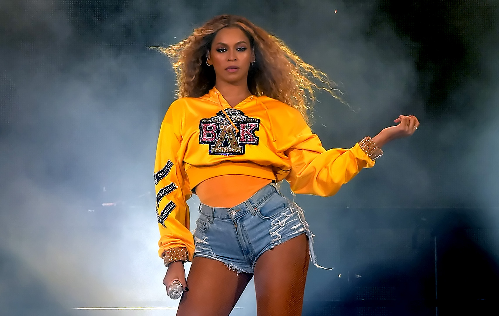

The woman who is the queen of R&B

Beyoncé Giselle Knowles-Carter is an American singer, songwriter, actress, record producer and dancer.
Here's a time line of her life and career:
1981–1996:Early life
1997–2002:Destiny's Child
2003–2007:Dangerously in Love and B'Day
2008–2010:I Am... Sasha Fierce and marriage
2011–2013:4 and motherhood
2013–2015:Beyoncé
2016–2017:Lemonade and collaborations
2018–present:Everything is Love
If you want to know more about her, see here.